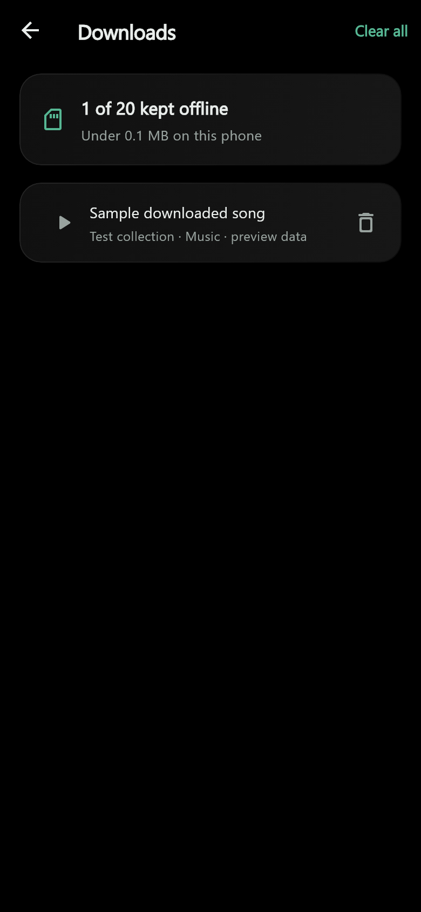
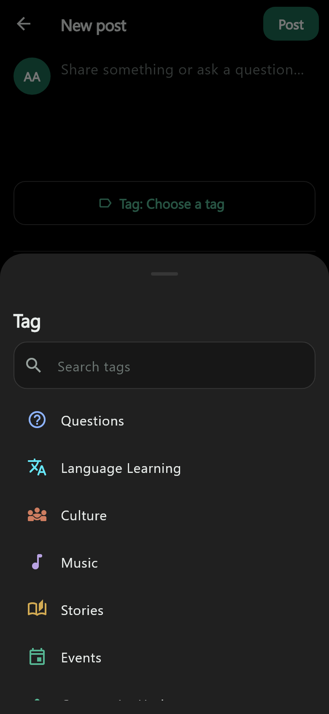
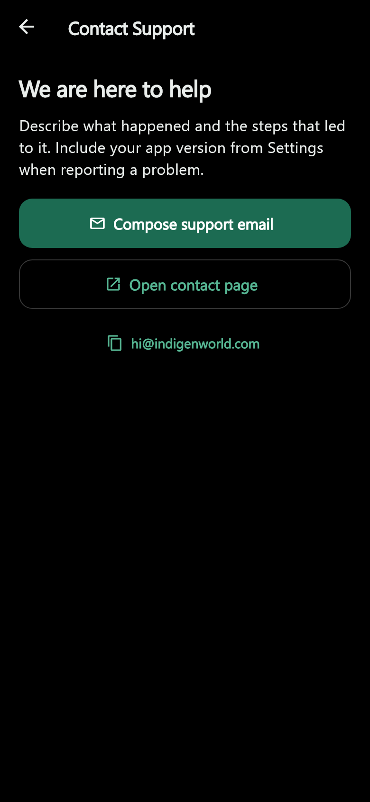

Development preview: these improvements are implemented in the mobile codebase. A Google Play release containing them has not been confirmed. We will update availability after release and phone checks.
Indigen World is becoming easier to move around, read and listen to. This update brings community feeds, downloaded audio, the player, the dictionary and Settings into a more consistent experience.
The Community page keeps Make a Post as its clear composing entry. The duplicate Today in Kasem shortcut is removed from this page; distinct community prompts elsewhere remain. Swipe the feed strip through For You, Following, + Communities and the communities you have joined. Select a community to read its feed, or use + Communities to discover and join another. Leaving a selected community returns you to For You.
Open Collection and tap the download icon at the top. Downloads lists saved audio from across your collections, with its title and collection attribution. Tap a playable item to start a queue of the downloaded items shown here. The existing player provides pause, seeking and next or previous tracks, and stays with you as you navigate.
Playback resolves to files on your phone instead of requiring the original collection page. Missing or unfinished files are labelled unavailable and can be downloaded again when you reconnect. Existing downloads remain accessible when a subscription expires; adding or retrying a download still follows the current subscription allowance. New downloads also keep artwork locally when it is available.

The composer now labels the topic selector Tag. Open it to search, choose or clear a topic. Language Learning, Culture, Stories, Music, Questions, Events and Community Updates help describe what you are sharing. A selected tag stays with a saved draft and appears on the published post. Photos, video, audio and polls retain their existing handling. Announcements remain reserved for authorised community roles.

Short, shared transitions give feedback when you navigate, select a tab, open a sheet or press a control. They honour system reduced-motion preferences. Explore keeps its controls visible at a subdued opacity while video plays. A tap restores emphasis and acts immediately; menus keep controls emphasised, and pausing restores full opacity.
Black is a new free theme in Settings, with pure black page backgrounds, restrained dark surfaces and readable text. It persists across restarts and includes the player, dictionary, notifications, composer and the app-owned Android Kasem keyboard. The dictionary uses the same shared navigation bar as other app destinations. The main Collection search bar has been removed to give the collections room.
Contact Support now opens its own screen, with back navigation, a support email action, the established contact page and an option to copy the address. Community notifications retain real activity, show read and unread states, group by date, remove duplicate entries and offer older notifications and retry feedback. Opening an alert marks it read through the existing backend and opens its supported destination.
The Kasem keyboard suggestion appears in relevant focused text fields, hides when Android reports that the app's Kasem keyboard is selected, and can be dismissed permanently. Keyboard setup stays available in Settings. Other platforms do not claim to identify a system keyboard.

The Android app also uses Google's native in-app review flow after eligible meaningful usage at existing completion points, with a persistent cooldown and no rating gate or reward. Google may suppress the card; completing the flow does not tell us whether a review was submitted. Settings provides a separate Rate on Google Play link.
These changes are prepared for the next mobile release. They have not been published to Google Play by this work. The accompanying tag rules and backend catalogue need deployment before the new tag values are offered in production. Native playback, keyboard, system bars and Google Play review behaviour still require checks on an Android device and a Play-distributed test build. Blogger publication and community sharing remain with Chinedum.